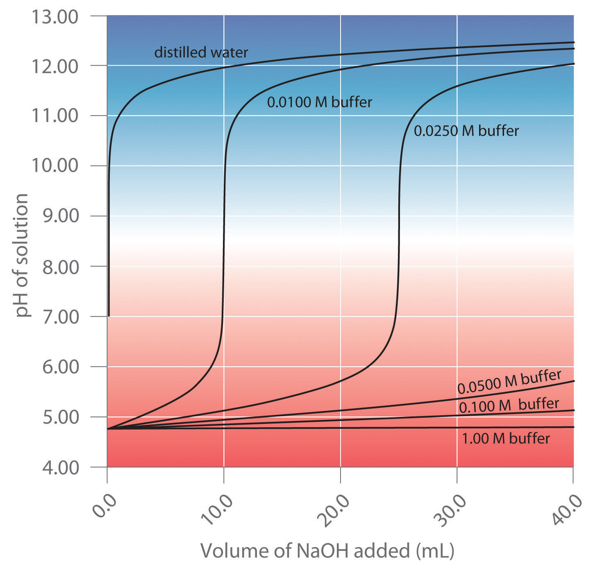
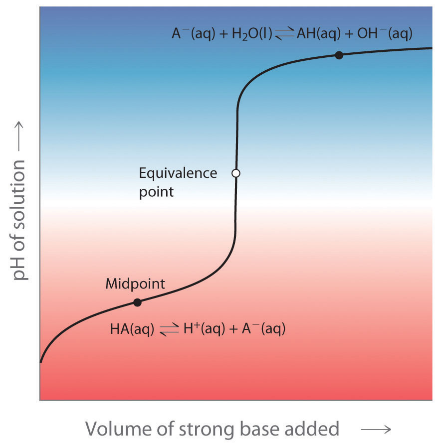
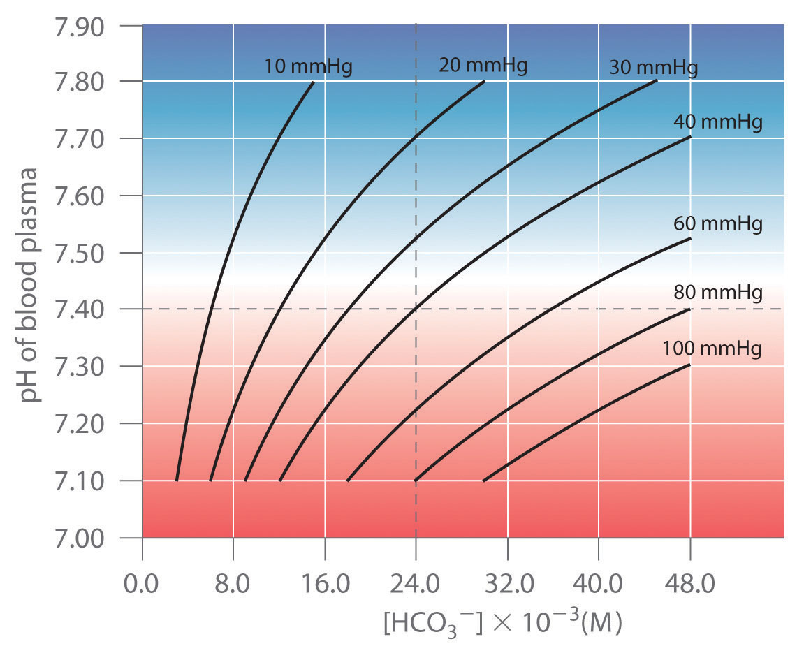

BuffersSolutions that maintain a relatively constant pH when an acid or a base is added. are solutions that maintain a relatively constant pH when an acid or a base is added. They therefore protect, or “buffer,” other molecules in solution from the effects of the added acid or base. Buffers contain either a weak acid (HA) and its conjugate base (A−) or a weak base (B) and its conjugate acid (BH+), and they are critically important for the proper functioning of biological systems. In fact, every biological fluid is buffered to maintain its physiological pH.
To understand how buffers work, let’s look first at how the ionization equilibrium of a weak acid is affected by adding either the conjugate base of the acid or a strong acid (a source of H+). Le Châtelier’s principle can be used to predict the effect on the equilibrium position of the solution.
A typical buffer used in biochemistry laboratories contains acetic acid and a salt such as sodium acetate. Recall that the dissociation reaction of acetic acid is as follows:
Equation 16.54
and the equilibrium constant expression is as follows:
Equation 16.55
Sodium acetate (CH3CO2Na) is a strong electrolyte that ionizes completely in aqueous solution to produce Na+ and CH3CO2− ions. If sodium acetate is added to a solution of acetic acid, Le Châtelier’s principle predicts that the equilibrium in Equation 16.54 will shift to the left, consuming some of the added CH3CO2− and some of the H+ ions originally present in solution:
Because Na+ is a spectator ion, it has no effect on the position of the equilibrium and can be ignored. The addition of sodium acetate produces a new equilibrium composition, in which [H+] is less than the initial value. Because [H+] has decreased, the pH will be higher. Thus adding a salt of the conjugate base to a solution of a weak acid increases the pH. This makes sense because sodium acetate is a base, and adding any base to a solution of a weak acid should increase the pH.
If we instead add a strong acid such as HCl to the system, [H+] increases. Once again the equilibrium is temporarily disturbed, but the excess H+ ions react with the conjugate base (CH3CO2−), whether from the parent acid or sodium acetate, to drive the equilibrium to the left. The net result is a new equilibrium composition that has a lower [CH3CO2−] than before. In both cases, only the equilibrium composition has changed; the ionization constant Ka for acetic acid remains the same. Adding a strong electrolyte that contains one ion in common with a reaction system that is at equilibrium, in this case CH3CO2−, will therefore shift the equilibrium in the direction that reduces the concentration of the common ion. The shift in equilibrium is called the common ion effectThe shift in equilibrium that results when a strong electrolyte containing one ion in common with a reaction system that is at equilibrium is added to the system..
Adding a common ion to a system at equilibrium affects the equilibrium composition but not the ionization constant.
In Section 16.4 "Quantitative Aspects of Acid–Base Equilibriums", we calculated that a 0.150 M solution of formic acid at 25°C (pKa = 3.75) has a pH of 2.28 and is 3.5% ionized.
Given: solution concentration and pH, pKa, and percent ionization of acid; final concentration of conjugate base or strong acid added
Asked for: pH and percent ionization of formic acid
Strategy:
A Write a balanced equilibrium equation for the ionization equilibrium of formic acid. Tabulate the initial concentrations, the changes, and the final concentrations.
B Substitute the expressions for the final concentrations into the expression for Ka. Calculate [H+] and the pH of the solution.
C Construct a table of concentrations for the dissociation of formic acid. To determine the percent ionization, determine the anion concentration, divide it by the initial concentration of formic acid, and multiply the result by 100.
Solution:
A Because sodium formate is a strong electrolyte, it ionizes completely in solution to give formate and sodium ions. The Na+ ions are spectator ions, so they can be ignored in the equilibrium equation. Because water is both a much weaker acid than formic acid and a much weaker base than formate, the acid–base properties of the solution are determined solely by the formic acid ionization equilibrium:
The initial concentrations, the changes in concentration that occur as equilibrium is reached, and the final concentrations can be tabulated.
| [HCO2H] | [H+] | [HCO2−] | |
|---|---|---|---|
| initial | 0.150 | 1.00 × 10−7 | 0.100 |
| change | −x | +x | +x |
| final | (0.150 − x) | x | (0.100 + x) |
B We substitute the expressions for the final concentrations into the equilibrium constant expression and make our usual simplifying assumptions, so
Rearranging and solving for x,
The value of x is small compared with 0.150 or 0.100 M, so our assumption about the extent of ionization is justified. Moreover, KaCHA = (1.8 × 10−4)(0.150) = 2.7 × 10−5, which is greater than 1.0 × 10−6, so again, our assumption is justified. The final pH is −log(2.7 × 10−4) = 3.57, compared with the initial value of 2.29. Thus adding a salt containing the conjugate base of the acid has increased the pH of the solution, as we expect based on Le Châtelier’s principle; the stress on the system has been relieved by the consumption of H+ ions, driving the equilibrium to the left.
C Because HCl is a strong acid, it ionizes completely, and chloride is a spectator ion that can be neglected. Thus the only relevant acid–base equilibrium is again the dissociation of formic acid, and initially the concentration of formate is zero. We can construct a table of initial concentrations, changes in concentration, and final concentrations.
| [HCO2H] | [H+] | [HCO2−] | |
|---|---|---|---|
| initial | 0.150 | 0.200 | 0 |
| change | −x | +x | +x |
| final | (0.150 − x) | (0.200 + x) | x |
To calculate the percentage of formic acid that is ionized under these conditions, we have to determine the final [HCO2−]. We substitute final concentrations into the equilibrium constant expression and make the usual simplifying assumptions, so
Rearranging and solving for x,
Once again, our simplifying assumptions are justified. The percent ionization of formic acid is as follows:
Adding the strong acid to the solution, as shown in the table, decreased the percent ionization of formic acid by a factor of approximately 38 (3.45%/0.0900%). Again, this is consistent with Le Châtelier’s principle: adding H+ ions drives the dissociation equlibrium to the left.
Exercise
As you learned in Example 8, a 0.225 M solution of ethylamine (CH3CH2NH2, pKb = 3.19) has a pH of 12.08 and a percent ionization of 5.4% at 20°C. Calculate the following:
Answer:
Now let’s suppose we have a buffer solution that contains equimolar concentrations of a weak base (B) and its conjugate acid (BH+). The general equation for the ionization of a weak base is as follows:
Equation 16.56
If the equilibrium constant for the reaction as written in Equation 16.56 is small, for example Kb = 10−5, then the equilibrium constant for the reverse reaction is very large: K = 1/Kb = 105. Adding a strong base such as OH− to the solution therefore causes the equilibrium in Equation 16.56 to shift to the left, consuming the added OH−. As a result, the OH− ion concentration in solution remains relatively constant, and the pH of the solution changes very little. Le Châtelier’s principle predicts the same outcome: when the system is stressed by an increase in the OH− ion concentration, the reaction will proceed to the left to counteract the stress.
If the pKb of the base is 5.0, the pKa of its conjugate acid is pKa = pKw − pKb = 14.0 – 5.0 = 9.0. Thus the equilibrium constant for ionization of the conjugate acid is even smaller than that for ionization of the base. The ionization reaction for the conjugate acid of a weak base is written as follows:
Equation 16.57
Again, the equilibrium constant for the reverse of this reaction is very large: K = 1/Ka = 109. If a strong acid is added, it is neutralized by reaction with the base as the reaction in Equation 16.57 shifts to the left. As a result, the H+ ion concentration does not increase very much, and the pH changes only slightly. In effect, a buffer solution behaves somewhat like a sponge that can absorb H+ and OH− ions, thereby preventing large changes in pH when appreciable amounts of strong acid or base are added to a solution.
Buffers are characterized by the pH range over which they can maintain a more or less constant pH and by their buffer capacityThe amount of strong acid or strong base that a buffer solution can absorb before the pH changes dramatically., the amount of strong acid or base that can be absorbed before the pH changes significantly. Although the useful pH range of a buffer depends strongly on the chemical properties of the weak acid and weak base used to prepare the buffer (i.e., on K), its buffer capacity depends solely on the concentrations of the species in the buffered solution. The more concentrated the buffer solution, the greater its buffer capacity. As illustrated in Figure 16.26 "Effect of Buffer Concentration on the Capacity of a Buffer", when NaOH is added to solutions that contain different concentrations of an acetic acid/sodium acetate buffer, the observed change in the pH of the buffer is inversely proportional to the concentration of the buffer. If the buffer capacity is 10 times larger, then the buffer solution can absorb 10 times more strong acid or base before undergoing a significant change in pH.
Figure 16.26 Effect of Buffer Concentration on the Capacity of a Buffer
A buffer maintains a relatively constant pH when acid or base is added to a solution. The addition of even tiny volumes of 0.10 M NaOH to 100.0 mL of distilled water results in a very large change in pH. As the concentration of a 50:50 mixture of sodium acetate/acetic acid buffer in the solution is increased from 0.010 M to 1.00 M, the change in the pH produced by the addition of the same volume of NaOH solution decreases steadily. For buffer concentrations of at least 0.500 M, the addition of even 25 mL of the NaOH solution results in only a relatively small change in pH.
The pH of a buffer can be calculated from the concentrations of the weak acid and the weak base used to prepare it, the concentration of the conjugate base and conjugate acid, and the pKa or pKb of the weak acid or weak base. The procedure is analogous to that used in Example 14 to calculate the pH of a solution containing known concentrations of formic acid and formate.
An alternative method frequently used to calculate the pH of a buffer solution is based on a rearrangement of the equilibrium equation for the dissociation of a weak acid. The simplified ionization reaction is for which the equilibrium constant expression is as follows:
Equation 16.58
This equation can be rearranged as follows:
Equation 16.59
Taking the logarithm of both sides and multiplying both sides by −1,
Equation 16.60
Replacing the negative logarithms in Equation 16.60,
Equation 16.61
or, more generally,
Equation 16.62
Equation 16.61 and Equation 16.62 are both forms of the Henderson-Hasselbalch equationA rearranged version of the equilibrium constant expression that provides a direct way to calculate the pH of a buffer solution: pH = + log([base]/[acid])., named after the two early-20th-century chemists who first noticed that this rearranged version of the equilibrium constant expression provides an easy way to calculate the pH of a buffer solution. In general, the validity of the Henderson-Hasselbalch equation may be limited to solutions whose concentrations are at least 100 times greater than their Ka values.
There are three special cases where the Henderson-Hasselbalch equation is easily interpreted without the need for calculations:
Each time we increase the [base]/[acid] ratio by 10, the pH of the solution increases by 1 pH unit. Conversely, if the [base]/[acid] ratio is 0.1, then pH = pKa − 1. Each additional factor-of-10 decrease in the [base]/[acid] ratio causes the pH to decrease by 1 pH unit.
If [base] = [acid] for a buffer, then pH = pKa. Changing this ratio by a factor of 10 either way changes the pH by ±1 unit.
What is the pH of a solution that contains
Given: concentration of acid, conjugate base, and pKa; concentration of base, conjugate acid, and pKb
Asked for: pH
Strategy:
Substitute values into either form of the Henderson-Hasselbalch equation (Equation 16.61 or Equation 16.62) to calculate the pH.
Solution:
According to the Henderson-Hasselbalch equation, the pH of a solution that contains both a weak acid and its conjugate base is pH = pKa + log([A−]/[HA]). Inserting the given values into the equation,
This result makes sense because the [A−]/[HA] ratio is between 1 and 10, so the pH of the buffer must be between the pKa (3.75) and pKa + 1, or 4.75.
This is identical to part (a), except for the concentrations of the acid and the conjugate base, which are 10 times lower. Inserting the concentrations into the Henderson-Hasselbalch equation,
This result is identical to the result in part (a), which emphasizes the point that the pH of a buffer depends only on the ratio of the concentrations of the conjugate base and the acid, not on the magnitude of the concentrations. Because the [A−]/[HA] ratio is the same as in part (a), the pH of the buffer must also be the same (3.95).
In this case, we have a weak base, pyridine (Py), and its conjugate acid, the pyridinium ion (HPy+). We will therefore use Equation 16.62, the more general form of the Henderson-Hasselbalch equation, in which “base” and “acid” refer to the appropriate species of the conjugate acid–base pair. We are given [base] = [Py] = 0.119 M and [acid] = [HPy+] = 0.234 M. We also are given pKb = 8.77 for pyridine, but we need pKa for the pyridinium ion. Recall from Equation 16.23 that the pKb of a weak base and the pKa of its conjugate acid are related: pKa + pKb = pKw. Thus pKa for the pyridinium ion is pKw − pKb = 14.00 − 8.77 = 5.23. Substituting this pKa value into the Henderson-Hasselbalch equation,
Once again, this result makes sense: the [B]/[BH+] ratio is about 1/2, which is between 1 and 0.1, so the final pH must be between the pKa (5.23) and pKa − 1, or 4.23.
Exercise
What is the pH of a solution that contains
The pKa of benzoic acid is 4.20, and the pKb of trimethylamine is also 4.20.
Answer:
The Henderson-Hasselbalch equation can also be used to calculate the pH of a buffer solution after adding a given amount of strong acid or strong base, as demonstrated in Example 16.
The buffer solution in Example 15 contained 0.135 M HCO2H and 0.215 M HCO2Na and had a pH of 3.95.
Given: composition and pH of buffer; concentration and volume of added acid or base
Asked for: final pH
Strategy:
A Calculate the amounts of formic acid and formate present in the buffer solution using the procedure from Example 14. Then calculate the amount of acid or base added.
B Construct a table showing the amounts of all species after the neutralization reaction. Use the final volume of the solution to calculate the concentrations of all species. Finally, substitute the appropriate values into the Henderson-Hasselbalch equation (Equation 16.62) to obtain the pH.
Solution:
The added HCl (a strong acid) or NaOH (a strong base) will react completely with formate (a weak base) or formic acid (a weak acid), respectively, to give formic acid or formate and water. We must therefore calculate the amounts of formic acid and formate present after the neutralization reaction.
A We begin by calculating the millimoles of formic acid and formate present in 100 mL of the initial pH 3.95 buffer:
The millimoles of H+ in 5.00 mL of 1.00 M HCl is as follows:
B Next, we construct a table of initial amounts, changes in amounts, and final amounts:
| HCO2−(aq) + H+(aq) → HCO2H(aq) | |||
|---|---|---|---|
| [HCO2−] | [H+] | [HCO2H] | |
| initial | 21.5 mmol | 5.00 mmol | 13.5 mmol |
| change | −5.00 mmol | −5.00 mmol | +5.00 mmol |
| final | 16.5 mmol | ∼0 mmol | 18.5 mmol |
The final amount of H+ in solution is given as “∼0 mmol.” For the purposes of the stoichiometry calculation, this is essentially true, but remember that the point of the problem is to calculate the final [H+] and thus the pH. We now have all the information we need to calculate the pH. We can use either the lengthy procedure of Example 14 or the Henderson–Hasselbach equation. Because we have performed many equilibrium calculations in this chapter, we’ll take the latter approach. The Henderson-Hasselbalch equation requires the concentrations of HCO2− and HCO2H, which can be calculated using the number of millimoles (n) of each and the total volume (VT). Substituting these values into the Henderson-Hasselbalch equation,
Because the total volume appears in both the numerator and denominator, it cancels. We therefore need to use only the ratio of the number of millimoles of the conjugate base to the number of millimoles of the weak acid. So
Once again, this result makes sense on two levels. First, the addition of HCl has decreased the pH from 3.95, as expected. Second, the ratio of HCO2− to HCO2H is slightly less than 1, so the pH should be between the pKa and pKa − 1.
A The procedure for solving this part of the problem is exactly the same as that used in part (a). We have already calculated the numbers of millimoles of formic acid and formate in 100 mL of the initial pH 3.95 buffer: 13.5 mmol of HCO2H and 21.5 mmol of HCO2−. The number of millimoles of OH− in 5.00 mL of 1.00 M NaOH is as follows:
B With this information, we can construct a table of initial amounts, changes in amounts, and final amounts.
| HCO2H(aq) + OH−(aq) → HCO2−(aq) + H2O(l) | |||
|---|---|---|---|
| [HCO2H] | [OH−] | [HCO2−] | |
| initial | 13.5 mmol | 5.00 mmol | 21.5 mmol |
| change | −5.00 mmol | −5.00 mmol | +5.00 mmol |
| final | 8.5 mmol | ∼0 mmol | 26.5 mmol |
The final amount of OH− in solution is not actually zero; this is only approximately true based on the stoichiometric calculation. We can calculate the final pH by inserting the numbers of millimoles of both HCO2− and HCO2H into the simplified Henderson-Hasselbalch expression used in part (a) because the volume cancels:
Once again, this result makes chemical sense: the pH has increased, as would be expected after adding a strong base, and the final pH is between the pKa and pKa + 1, as expected for a solution with a HCO2−/HCO2H ratio between 1 and 10.
Exercise
The buffer solution from Example 15 contained 0.119 M pyridine and 0.234 M pyridine hydrochloride and had a pH of 4.94.
Answer:
Only the amounts (in moles or millimoles) of the acidic and basic components of the buffer are needed to use the Henderson-Hasselbalch equation, not their concentrations.
The most effective buffers contain equal concentrations of an acid and its conjugate base.
The results obtained in Example 16 and its corresponding exercise demonstrate how little the pH of a well-chosen buffer solution changes despite the addition of a significant quantity of strong acid or strong base. Suppose we had added the same amount of HCl or NaOH solution to 100 mL of an unbuffered solution at pH 3.95 (corresponding to 1.1 × 10−4 M HCl). In this case, adding 5.00 mL of 1.00 M HCl would lower the final pH to 1.32 instead of 3.70, whereas adding 5.00 mL of 1.00 M NaOH would raise the final pH to 12.68 rather than 4.24. (Try verifying these values by doing the calculations yourself.) Thus the presence of a buffer significantly increases the ability of a solution to maintain an almost constant pH.
A buffer that contains approximately equal amounts of a weak acid and its conjugate base in solution is equally effective at neutralizing either added base or added acid. This is shown in Figure 16.27 "Distribution Curve Showing the Fraction of Acetic Acid Molecules and Acetate Ions as a Function of pH in a Solution of Acetic Acid" for an acetic acid/sodium acetate buffer. Adding a given amount of strong acid shifts the system along the horizontal axis to the left, whereas adding the same amount of strong base shifts the system the same distance to the right. In either case, the change in the ratio of CH3CO2− to CH3CO2H from 1:1 reduces the buffer capacity of the solution.
Figure 16.27 Distribution Curve Showing the Fraction of Acetic Acid Molecules and Acetate Ions as a Function of pH in a Solution of Acetic Acid

The pH range over which the acetic acid/sodium acetate system is an effective buffer (the darker shaded region) corresponds to the region in which appreciable concentrations of both species are present (pH 3.76–5.76, corresponding to pH = pKa ± 1).
There is a strong correlation between the effectiveness of a buffer solution and the titration curves discussed in Section 16.5 "Acid–Base Titrations". Consider the schematic titration curve of a weak acid with a strong base shown in Figure 16.28 "The Relationship between Titration Curves and Buffers". As indicated by the labels, the region around pKa corresponds to the midpoint of the titration, when approximately half the weak acid has been neutralized. This portion of the titration curve corresponds to a buffer: it exhibits the smallest change in pH per increment of added strong base, as shown by the nearly horizontal nature of the curve in this region. The nearly flat portion of the curve extends only from approximately a pH value of 1 unit less than the pKa to approximately a pH value of 1 unit greater than the pKa, which is why buffer solutions usually have a pH that is within ±1 pH units of the pKa of the acid component of the buffer.
Figure 16.28 The Relationship between Titration Curves and Buffers
This schematic plot of pH for the titration of a weak acid with a strong base shows the nearly flat region of the titration curve around the midpoint, which corresponds to the formation of a buffer. At the lower left, the pH of the solution is determined by the equilibrium for dissociation of the weak acid; at the upper right, the pH is determined by the equilibrium for reaction of the conjugate base with water.
In the region of the titration curve at the lower left, before the midpoint, the acid–base properties of the solution are dominated by the equilibrium for dissociation of the weak acid, corresponding to Ka. In the region of the titration curve at the upper right, after the midpoint, the acid–base properties of the solution are dominated by the equilibrium for reaction of the conjugate base of the weak acid with water, corresponding to Kb. However, we can calculate either Ka or Kb from the other because they are related by Kw.
Metabolic processes produce large amounts of acids and bases, yet organisms are able to maintain an almost constant internal pH because their fluids contain buffers. This is not to say that the pH is uniform throughout all cells and tissues of a mammal. The internal pH of a red blood cell is about 7.2, but the pH of most other kinds of cells is lower, around 7.0. Even within a single cell, different compartments can have very different pH values. For example, one intracellular compartment in white blood cells has a pH of around 5.0.
Because no single buffer system can effectively maintain a constant pH value over the entire physiological range of approximately pH 5.0 to 7.4, biochemical systems use a set of buffers with overlapping ranges. The most important of these is the CO2/HCO3− system, which dominates the buffering action of blood plasma.
The acid–base equilibrium in the CO2/HCO3− buffer system is usually written as follows:
Equation 16.63
with Ka = 4.5 × 10−7 and pKa = 6.35 at 25°C. In fact, Equation 16.63 is a grossly oversimplified version of the CO2/HCO3− system because a solution of CO2 in water contains only rather small amounts of H2CO3. Thus Equation 16.63 does not allow us to understand how blood is actually buffered, particularly at a physiological temperature of 37°C. As shown in Equation 16.64, CO2 is in equilibrium with H2CO3, but the equilibrium lies far to the left, with an H2CO3/CO2 ratio less than 0.01 under most conditions:
Equation 16.64
with K′ = 4.0 × 10−3 at 37°C. The true pKa of carbonic acid at 37°C is therefore 3.70, not 6.35, corresponding to a Ka of 2.0 × 10−4, which makes it a much stronger acid than Equation 16.63 suggests. Adding Equation 16.63 and Equation 16.64 and canceling H2CO3 from both sides give the following overall equation for the reaction of CO2 with water to give a proton and the bicarbonate ion:
Equation 16.65
The K value for the reaction in Equation 16.65 is the product of the true ionization constant for carbonic acid (Ka) and the equilibrium constant (K) for the reaction of CO2(aq) with water to give carbonic acid. The equilibrium equation for the reaction of CO2 with water to give bicarbonate and a proton is therefore
Equation 16.66
The presence of a gas in the equilibrium constant expression for a buffer is unusual. According to Henry’s law, where k is the Henry’s law constant for CO2, which is 3.0 × 10−5 M/mmHg at 37°C. (For more information about Henry’s law, see Chapter 13 "Solutions", Section 13.4 "Effects of Temperature and Pressure on Solubility".) Substituting this expression for [CO2] in Equation 16.66,
Equation 16.67
where is in mmHg. Taking the negative logarithm of both sides and rearranging,
Equation 16.68
Thus the pH of the solution depends on both the CO2 pressure over the solution and [HCO3−]. Figure 16.29 "Buffering in Blood: pH versus [HCO" plots the relationship between pH and [HCO3−] under physiological conditions for several different values of with normal pH and [HCO3−] values indicated by the dashed lines.
Figure 16.29 Buffering in Blood: pH versus [HCO3−] Curves for Buffers with Different Values of
Only those combinations of pH and [HCO3−] that lie on a given line are allowed for the particular value of indicated. Normal values of blood plasma pH and [HCO3−] are indicated by dashed lines.
According to Equation 16.65, adding a strong acid to the CO2/HCO3− system causes [HCO3−] to decrease as HCO3− is converted to CO2. Excess CO2 is released in the lungs and exhaled into the atmosphere, however, so there is essentially no change in Because the change in is small, Equation 16.68 predicts that the change in pH will also be rather small. Conversely, if a strong base is added, the OH− reacts with CO2 to form [HCO3−], but CO2 is replenished by the body, again limiting the change in both and pH. The CO2/HCO3− buffer system is an example of an open system, in which the total concentration of the components of the buffer change to keep the pH at a nearly constant value.
If a passenger steps out of an airplane in Denver, Colorado, for example, the lower at higher elevations (typically 31 mmHg at an elevation of 2000 m versus 40 mmHg at sea level) causes a shift to a new pH and [HCO3−]. The increase in pH and decrease in [HCO3−] in response to the decrease in are responsible for the general malaise that many people experience at high altitudes. If their blood pH does not adjust rapidly, the condition can develop into the life-threatening phenomenon known as altitude sickness.
Buffers are solutions that resist a change in pH after adding an acid or a base. Buffers contain a weak acid (HA) and its conjugate weak base (A−). Adding a strong electrolyte that contains one ion in common with a reaction system that is at equilibrium shifts the equilibrium in such a way as to reduce the concentration of the common ion. The shift in equilibrium is called the common ion effect. Buffers are characterized by their pH range and buffer capacity. The useful pH range of a buffer depends strongly on the chemical properties of the conjugate weak acid–base pair used to prepare the buffer (the Ka or Kb), whereas its buffer capacity depends solely on the concentrations of the species in the solution. The pH of a buffer can be calculated using the Henderson-Hasselbalch equation, which is valid for solutions whose concentrations are at least 100 times greater than their Ka values. Because no single buffer system can effectively maintain a constant pH value over the physiological range of approximately 5 to 7.4, biochemical systems use a set of buffers with overlapping ranges. The most important of these is the CO2/HCO3− system, which dominates the buffering action of blood plasma.
Explain why buffers are crucial for the proper functioning of biological systems.
What is the role of a buffer in chemistry and biology? Is it correct to say that buffers prevent a change in [H3O+]? Explain your reasoning.
Explain why the most effective buffers are those that contain approximately equal amounts of the weak acid and its conjugate base.
Which region of the titration curve of a weak acid or a weak base corresponds to the region of the smallest change in pH per amount of added strong acid or strong base?
If you were given a solution of sodium acetate, describe two ways you could convert the solution to a buffer.
Why are buffers usually used only within approximately one pH unit of the pKa or pKb of the parent weak acid or base?
The titration curve for a monoprotic acid can be divided into four regions: the starting point, the region around the midpoint of the titration, the equivalence point, and the region after the equivalence point. For which region would you use each approach to describe the behavior of the solution?
Which of the following will produce a buffer solution? Explain your reasoning in each case.
Which of the following will produce a buffer solution? Explain your reasoning in each case.
Use the definition of Kb for a weak base to derive the following expression, which is analogous to the Henderson-Hasselbalch equation but for a weak base (B) rather than a weak acid (HA):
Why do biological systems use overlapping buffer systems to maintain a constant pH?
The CO2/HCO3− buffer system of blood has an effective pKa of approximately 6.1, yet the normal pH of blood is 7.4. Why is CO2/HCO3− an effective buffer when the pKa is more than 1 unit below the pH of blood? What happens to the pH of blood when the CO2 pressure increases? when the O2 pressure increases?
Carbon dioxide produced during respiration is converted to carbonic acid (H2CO3). The pKa1 of carbonic acid is 6.35, and its pKa2 is 10.33. Write the equations corresponding to each pK value and predict the equilibrium position for each reaction.
Benzenesulfonic acid (pKa = 0.70) is synthesized by treating benzene with concentrated sulfuric acid. Calculate the following:
Phenol has a pKa of 9.99. Calculate the following:
Salicylic acid is used in the synthesis of acetylsalicylic acid, or aspirin. One gram dissolves in 460 mL of water to create a saturated solution with a pH of 2.40.
An intermediate used in the synthesis of perfumes is valeric acid, also called pentanoic acid. The pKa of pentanoic acid is 4.84 at 25°C.